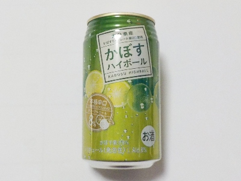

福岡県朝倉市柿原223
更新日 : 2026/02/10

カボス自体が薬味で風味が強いんですが、それの果汁が8%も入っているのでとってもフルーティーで美味しいです。
アルコールは8%なので酔うんですが、柑橘味の方が勝っているのでハイボール感はちょっと少ないです。
カボスって普段食べないので味を忘れていました。カボスのほとんどは大分県産で、この商品も大分県産カボスです。カボスはなんとなく酸っぱいイメジーでしたが、この商品は爽やかで甘味がある感じでした。
お酒の販売コーナーに行くとレモンの商品がいっぱいありますが、こっちもいいんじゃないと思いました。
148円で購入しました。
【おいしいものを食べよう。】【たくさん寝よう。】
【ソロ活をしよう!】【季節感のあることをしよう。】【動画視聴はほどほどに。】【当サイトの全てのコンテンツは無断転載禁止です。】